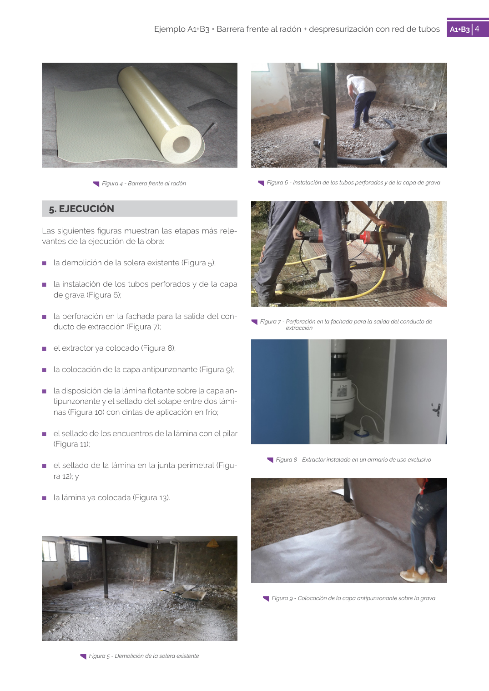

<!doctype html>
<html lang="es"><head><meta charset="utf-8">
<meta name="viewport" content="width=device-width, initial-scale=1">
<title>GUIA · p. 67 — Página 67</title><link rel="stylesheet" href="../estilo.css">
</head><body>
<nav><a href="../index.html">Índice</a> › <a href="../doc/guia-pdf-f3314b0414fe-sin-fecha-e58e54b822cf.html">GUIA</a> › p. 67</nav>

<header class="meta">
<p><strong>GUIA</strong> · Página 67 · versión sin-fecha</p>
<p>SHA256: <code>e58e54b822cf4ab00e258f0eb50c0f06a8c04e3730a7f530d224485e2a5bb02e</code> · página física 67 de 82 · métodos de encabezado
solo si están cotejados.</p>
<p><a href="../doc/guia-pdf-f3314b0414fe-sin-fecha-e58e54b822cf.html">Documento</a> · <a href="guia-pdf-f3314b0414fe-sin-fecha-e58e54b822cf__p0066.html">← p. 66</a> · <a href="guia-pdf-f3314b0414fe-sin-fecha-e58e54b822cf__p0068.html">p. 68 →</a></p>
<p>Formatos: <a href="../../contenido/docs/GUIA-PDF-f3314b0414fe/sin-fecha__e58e54b822cf/pagina/p0067.md">Markdown</a> · <a href="../../contenido/docs/GUIA-PDF-f3314b0414fe/sin-fecha__e58e54b822cf/bloque/p0067.json">JSON de bloques</a> · <a href="../../contenido/docs/GUIA-PDF-f3314b0414fe/sin-fecha__e58e54b822cf/fuente.pdf#page=67">PDF p. 67</a> · <a href="../../contenido/docs/GUIA-PDF-f3314b0414fe/sin-fecha__e58e54b822cf/figura/p0067.png">imagen PNG</a></p>
</header>
<nav class="paginas"><a href="../doc/guia-pdf-f3314b0414fe-sin-fecha-e58e54b822cf.html">Documento</a> <a href="guia-pdf-f3314b0414fe-sin-fecha-e58e54b822cf__p0066.html">← p. 66</a> <a href="guia-pdf-f3314b0414fe-sin-fecha-e58e54b822cf__p0068.html">p. 68 →</a></nav>
<h2>Encabezado de la página</h2><ul><li>Sin encabezado de fuente cotejada en esta página.</li></ul>

<pre class="literal">4
Ejemplo A1+B3 • Barrera frente al radón + despresurización con red de tubos
A1+B3 4
  Figura 4 - Barrera frente al radón
5. EJECUCIÓN
Las siguientes figuras muestran las etapas más rele­
vantes de la ejecución de la obra:
	
■
la demolición de la solera existente (Figura 5);
	
■
la instalación de los tubos perforados y de la capa 
de grava (Figura 6);
	
■
la perforación en la fachada para la salida del con­
ducto de extracción (Figura 7);
	
■
el extractor ya colocado (Figura 8);
	
■
la colocación de la capa antipunzonante (Figura 9);
	
■
la disposición de la lámina flotante sobre la capa an­
tipunzonante y el sellado del solape entre dos lámi­
nas (Figura 10) con cintas de aplicación en frío;
	
■
el sellado de los encuentros de la lámina con el pilar 
(Figura 11);
	
■
el sellado de la lámina en la junta perimetral (Figu-
ra 12); y
	
■
la lámina ya colocada (Figura 13).
  Figura 5 - Demolición de la solera existente
  Figura 6 - Instalación de los tubos perforados y de la capa de grava
  Figura 7 - Perforación en la fachada para la salida del conducto de 
extracción
  Figura 8 - Extractor instalado en un armario de uso exclusivo
  Figura 9 - Colocación de la capa antipunzonante sobre la grava
</pre>
<figure><a href="../../contenido/docs/GUIA-PDF-f3314b0414fe/sin-fecha__e58e54b822cf/figura/p0067.png"></a><figcaption>Imagen de la página 67 (PNG ya extraído; prevalece sobre fórmulas).</figcaption></figure>
<h2>Tablas candidatas de esta página</h2><ul><li>Sin tabla JSON para esta página.</li></ul>
<h2>Referencias, notas y excepciones (página y vecinas)</h2><ul><li>Sin referencias o notas separadas en el JSON.</li></ul>
<h2>Apartados que incluyen esta página</h2><ul><li><a href="../apartado/guia-pdf-f3314b0414fe-sin-fecha-e58e54b822cf__a0244.html">7 · 7   boca de expulsión</a></li><li><a href="../apartado/guia-pdf-f3314b0414fe-sin-fecha-e58e54b822cf__a0245.html">5 · 5. EJECUCIÓN</a></li></ul>

<footer>Generado estáticamente desde JSON normalizado; sin JavaScript ni servicios externos.
El JSON es la fuente; este HTML es caché reproducible.</footer>
</body></html>
